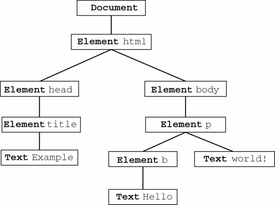
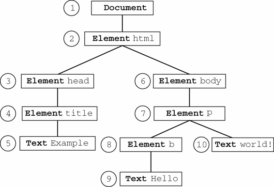

“DOM2级遍历和范围”模块定义了两个用于辅助完成顺序遍历DOM结构的类型：NodeIterator和TreeWalker。这两个类型能够基于给定的起点对DOM结构执行深度优先（depth-first）的遍历操作。在与DOM兼容的浏览器中（Firefox 1及更高版本、Safari 1.3及更高版本、Opera 7.6及更高版本、Chrome 0.2及更高版本），都可以访问到这些类型的对象。IE不支持DOM遍历。使用下列代码可以检测浏览器对DOM2级遍历能力的支持情况。
var supportsTraversals = document.implementation.hasFeature("Traversal", "2.0");
var supportsNodeIterator = (typeof document.createNodeIterator == "function");
var supportsTreeWalker = (typeof document.createTreeWalker == "function");
如前所述，DOM遍历是深度优先的DOM结构遍历，也就是说，移动的方向至少有两个（取决于使用的遍历类型）。遍历以给定节点为根，不可能向上超出DOM树的根节点。以下面的HTML页面为例。
<!DOCTYPE html>
<html>
<head>
<title>Example</title>
</head>
<body>
<p><b>Hello</b> world!</p>
</body>
</html>
图12-4展示了这个页面的DOM树。

图 12-4
任何节点都可以作为遍历的根节点。如果假设<body>元素为根节点，那么遍历的第一步就是访问<p>元素，然后再访问同为<body>元素后代的两个文本节点。不过，这次遍历永远不会到达<html>、<head>元素，也不会到达不属于<body>元素子树的任何节点。而以document为根节点的遍历则可以访问到文档中的全部节点。图12-5展示了对以document为根节点的DOM树进行深度优先遍历的先后顺序。

图 12-5
从document开始依序向前，访问的第一个节点是document，访问的最后一个节点是包含"world!"的文本节点。从文档最后的文本节点开始，遍历可以反向移动到DOM树的顶端。此时，访问的第一个节点是包含"Hello"的文本节点，访问的最后一个节点是document节点。NodeIterator和TreeWalker都以这种方式执行遍历。
NodeIteratorNodeIterator类型是两者中比较简单的一个，可以使用document.createNodeIterator()方法创建它的新实例。这个方法接受下列4个参数。
root：想要作为搜索起点的树中的节点。
whatToShow：表示要访问哪些节点的数字代码。
filter：是一个NodeFilter对象，或者一个表示应该接受还是拒绝某种特定节点的函数。
entityReferenceExpansion：布尔值，表示是否要扩展实体引用。这个参数在HTML页面中没有用，因为其中的实体引用不能扩展。
whatToShow参数是一个位掩码，通过应用一或多个过滤器（filter）来确定要访问哪些节点。这个参数的值以常量形式在NodeFilter类型中定义，如下所示。
NodeFilter.SHOW_ALL：显示所有类型的节点。
NodeFilter.SHOW_ELEMENT：显示元素节点。
NodeFilter.SHOW_ATTRIBUTE：显示特性节点。由于DOM结构原因，实际上不能使用这个值。
NodeFilter.SHOW_TEXT：显示文本节点。
NodeFilter.SHOW_CDATA_SECTION：显示CDATA节点。对HTML页面没有用。
NodeFilter.SHOW_ENTITY_REFERENCE：显示实体引用节点。对HTML页面没有用。
NodeFilter.SHOW_ENTITYE：显示实体节点。对HTML页面没有用。
NodeFilter.SHOW_PROCESSING_INSTRUCTION：显示处理指令节点。对HTML页面没有用。
NodeFilter.SHOW_COMMENT：显示注释节点。
NodeFilter.SHOW_DOCUMENT：显示文档节点。
NodeFilter.SHOW_DOCUMENT_TYPE：显示文档类型节点。
NodeFilter.SHOW_DOCUMENT_FRAGMENT：显示文档片段节点。对HTML页面没有用。
NodeFilter.SHOW_NOTATION：显示符号节点。对HTML页面没有用。
除了NodeFilter.SHOW_ALL之外，可以使用按位或操作符来组合多个选项，如下面的例子所示：
var whatToShow = NodeFilter.SHOW_ELEMENT | NodeFilter.SHOW_TEXT;
可以通过createNodeIterator()方法的filter参数来指定自定义的NodeFilter对象，或者指定一个功能类似节点过滤器（node filter）的函数。每个NodeFilter对象只有一个方法，即acceptNode()；如果应该访问给定的节点，该方法返回NodeFilter.FILTER_ACCEPT，如果不应该访问给定的节点，该方法返回NodeFilter.FILTER_SKIP。由于NodeFilter是一个抽象的类型，因此不能直接创建它的实例。在必要时，只要创建一个包含acceptNode()方法的对象，然后将这个对象传入createNodeIterator()中即可。例如，下列代码展示了如何创建一个只显示<p>元素的节点迭代器。
var filter = {
acceptNode: function(node){
return node.tagName.toLowerCase() == "p" ?
NodeFilter.FILTER_ACCEPT :
NodeFilter.FILTER_SKIP;
}
};
var iterator = document.createNodeIterator(root, NodeFilter.SHOW_ELEMENT,
filter, false);
第三个参数也可以是一个与acceptNode()方法类似的函数，如下所示。
var filter = function(node){
return node.tagName.toLowerCase() == "p" ?
NodeFilter.FILTER_ACCEPT :
NodeFilter.FILTER_SKIP;
};
var iterator = document.createNodeIterator(root, NodeFilter.SHOW_ELEMENT,
filter, false);
一般来说，这就是在JavaScript中使用这个方法的形式，这种形式比较简单，而且也跟其他的JavaScript代码很相似。如果不指定过滤器，那么应该在第三个参数的位置上传入null。
下面的代码创建了一个能够访问所有类型节点的简单的NodeIterator。
var iterator = document.createNodeIterator(document, NodeFilter.SHOW_ALL,
null, false);
NodeIterator类型的两个主要方法是nextNode()和previousNode()。顾名思义，在深度优先的DOM子树遍历中，nextNode()方法用于向前前进一步，而previousNode()用于向后后退一步。在刚刚创建的NodeIterator对象中，有一个内部指针指向根节点，因此第一次调用nextNode()会返回根节点。当遍历到DOM子树的最后一个节点时，nextNode()返回null。previousNode()方法的工作机制类似。当遍历到DOM子树的最后一个节点，且previousNode()返回根节点之后，再次调用它就会返回null。
以下面的HTML片段为例。
<div id="div1">
<p><b>Hello</b> world!</p>
<ul>
<li>List item 1</li>
<li>List item 2</li>
<li>List item 3</li>
</ul>
</div>
NodeIteratorExample1.htm
假设我们想要遍历<div>元素中的所有元素，那么可以使用下列代码。
var div = document.getElementById("div1");
var iterator = document.createNodeIterator(div, NodeFilter.SHOW_ELEMENT,
null, false);
var node = iterator.nextNode();
while (node !== null) {
alert(node.tagName); //输出标签名
node = iterator.nextNode();
}
NodeIteratorExample1.htm
在这个例子中，第一次调用nextNode()返回<p>元素。因为在到达DOM子树末端时nextNode()返回null，所以这里使用了while语句在每次循环时检查对nextNode()的调用是否返回了null。执行上面的代码会显示如下标签名：
DIV
P
B
UL
LI
LI
LI
也许用不着显示那么多信息，你只想返回遍历中遇到的<li>元素。很简单，只要使用一个过滤器即可，如下面的例子所示。
var div = document.getElementById("div1");
var filter = function(node){
return node.tagName.toLowerCase() == "li" ?
NodeFilter.FILTER_ACCEPT :
NodeFilter.FILTER_SKIP;
};
var iterator = document.createNodeIterator(div, NodeFilter.SHOW_ELEMENT,
filter, false);
var node = iterator.nextNode();
while (node !== null) {
alert(node.tagName); //输出标签名
node = iterator.nextNode();
}
NodeIteratorExample2.htm
在这个例子中，迭代器只会返回<li>元素。
由于nextNode()和previousNode()方法都基于NodeIterator在DOM结构中的内部指针工作，所以DOM结构的变化会反映在遍历的结果中。
Firefox 3.5之前的版本没有实现
createNodeIterator()方法，但却支持下一节要讨论的createTreeWalker()方法。
TreeWalkerTreeWalker是NodeIterator的一个更高级的版本。除了包括nextNode()和previousNode()在内的相同的功能之外，这个类型还提供了下列用于在不同方向上遍历DOM结构的方法。
parentNode()：遍历到当前节点的父节点；
firstChild()：遍历到当前节点的第一个子节点；
lastChild()：遍历到当前节点的最后一个子节点；
nextSibling()：遍历到当前节点的下一个同辈节点；
previousSibling()：遍历到当前节点的上一个同辈节点。
创建TreeWalker对象要使用document.createTreeWalker()方法，这个方法接受的4个参数与document.createNodeIterator()方法相同：作为遍历起点的根节点、要显示的节点类型、过滤器和一个表示是否扩展实体引用的布尔值。由于这两个创建方法很相似，所以很容易用TreeWalker来代替NodeIterator，如下面的例子所示。
var div = document.getElementById("div1");
var filter = function(node){
return node.tagName.toLowerCase() == "li"?
NodeFilter.FILTER_ACCEPT :
NodeFilter.FILTER_SKIP;
};
var walker= document.createTreeWalker(div, NodeFilter.SHOW_ELEMENT,
filter, false);
var node = walker.nextNode();
while (node !== null) {
alert(node.tagName); //输出标签名
node = walker.nextNode();
}
TreeWalkerExample1.htm
在这里，filter可以返回的值有所不同。除了NodeFilter.FILTER_ACCEPT和NodeFilter.FILTER_SKIP之外，还可以使用NodeFilter.FILTER_REJECT。在使用NodeIterator对象时，NodeFilter.FILTER_SKIP与NodeFilter.FILTER_REJECT的作用相同：跳过指定的节点。但在使用TreeWalker对象时，NodeFilter.FILTER_SKIP会跳过相应节点继续前进到子树中的下一个节点，而NodeFilter.FILTER_REJECT则会跳过相应节点及该节点的整个子树。例如，将前面例子中的NodeFilter.FILTER_SKIP修改成NodeFilter.FILTER_REJECT，结果就是不会访问任何节点。这是因为第一个返回的节点是<div>，它的标签名不是"li"，于是就会返回NodeFilter.FILTER_REJECT，这意味着遍历会跳过整个子树。在这个例子中，<div>元素是遍历的根节点，于是结果就会停止遍历。
当然，TreeWalker真正强大的地方在于能够在DOM结构中沿任何方向移动。使用TreeWalker遍历DOM树，即使不定义过滤器，也可以取得所有<li>元素，如下面的代码所示。
var div = document.getElementById("div1");
var walker = document.createTreeWalker(div, NodeFilter.SHOW_ELEMENT, null, false);
walker.firstChild(); //转到<p>
walker.nextSibling(); //转到<ul>
var node = walker.firstChild(); //转到第一个<li>
while (node !== null) {
alert(node.tagName);
node = walker.nextSibling();
}
TreeWalkerExample2.htm
因为我们知道<li>元素在文档结构中的位置，所以可以直接定位到那里，即使用firstChild()转到<p>元素，使用nextSibling()转到<ul>元素，然后再使用firstChild()转到第一个<li>元素。注意，此处TreeWalker只返回元素（由传入到createTreeWalker()的第二个参数决定）。因此，可以放心地使用nextSibling()访问每一个<li>元素，直至这个方法最后返回null。
TreeWalker类型还有一个属性，名叫currentNode，表示任何遍历方法在上一次遍历中返回的节点。通过设置这个属性也可以修改遍历继续进行的起点，如下面的例子所示。
var node = walker.nextNode();
alert(node === walker.currentNode); //true
walker.currentNode = document.body; //修改起点
与NodeIterator相比，TreeWalker类型在遍历DOM时拥有更大的灵活性。由于IE中没有对应的类型和方法，所以使用遍历的跨浏览器解决方案非常少见。